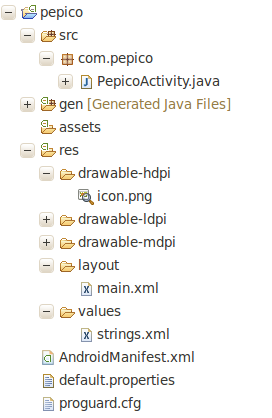
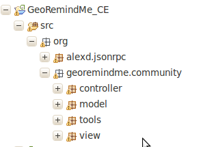

¿Qué es Android para un NO Freak?
¿Qué es Android para un NO Freak?
- Definición
Android es un sistema operativo basado en el núcleo Linux diseñado originalmente para dispositivos móviles, pero que posteriormente se expandió su desarrollo para soportar otros dispositivos tales como tablet, reproductores MP3, netbook, PC, etc.
¿Qué es Android para nosotros?

¿Cómo se programa en Android?
+

¿Cómo se programa en Android?
Conceptos básicos
¿Cómo se programa en Android?
Conceptos básicos
- Activity
Una actividad es una View
¿Cómo se programa en Android?
Conceptos básicos
- Service
Un componente que corre en background
¿Cómo se programa en Android?
Conceptos básicos
- Content Provider
Gestor de contenido de alto nivel
¿Cómo se programa en Android?
Conceptos básicos
- Broadcast Receiver
Componente que responde a los mensajes del sistema
¿Cómo se programa en Android?
Conceptos básicos
- Intent
Encargado de activar los componentes
¿Cómo se programa en Android?
Conceptos básicos
- Manifest.xml
Definición de los componentes del programa
¿Cómo se programa en Android?
Hello World!
- Resultado:

¿Cómo se programa en Android?
Hello World!
- Activity
public class mainActivity extends Activity {
@Override
public void onCreate(Bundle savedInstanceState){
super.onCreate(savedInstanceState);
setContentView(R.layout.main);
}
}
¿Cómo se programa en Android?
Hello World!
- Activity

¿Cómo se programa en Android?
Hello World!
- Intent
Intent i = new Intent(getApplicationContext(), captureQRCodeActivity.class);
i.putExtra("pista", 1);
startActivity(i);
¿Cómo se programa en Android?
Hello World!
- Manifest.xml
¿Cómo se programa en Android?
Android_QR_Code!
- Puesta a punto
- Clonar proyecto o bajar cambios
git clone git@github.com:GeoRemindMe/Android_QR_Code.git
git pull origin master
- Importar a Eclipse
Archivo -> Importar
- Si da algún error
Android Tools -> Fix Project Properties
¿Cómo se programa en Android?
Android_QR_Code!
- MVC (Model View Controller)

¿Cómo se programa en Android?
Android_QR_Code!
- Controller
public class Controller extends MVCController {
private static final String LOG = "GeoRemindMe";
private static Controller instance;
private MVCControllerStateInterface state;
private Context context;
private Server server;
}
¿Cómo se programa en Android?
Android_QR_Code!
- Controller
public static Controller getInstace(Context context)
{
Log.v(LOG, "Controller-getInstance (context)");
if (instance == null)
instance = new Controller(context);
return instance;
}
protected Controller(Context context)
{
super(context);
this.context = context;
Log.v(LOG, "Controller-Controller (context)");
// Creamos el estado y lo registramos en el MVC
state = new ReadyState(this);
this.changeMVCState(state);
server = Server.getInstance(context, this);
}
¿Cómo se programa en Android?
Android_QR_Code!
- ControllerState
package org.georemindme.controller;
import android.os.Message;
public interface ControllerState
{
boolean handleMessage(Message msg);
}
¿Cómo se programa en Android?
Android_QR_Code!
- ReadyState
public class ReadyState implements MVCControllerStateInterface
{
private static final String LOG = "GeoRemindMe";
private final Controller controller;
public ReadyState(Controller controller)
{
this.controller = controller;
}
}
¿Cómo se programa en Android?
Android_QR_Code!
- ReadyState
public boolean handleMessage(Message msg)
{
Log.v(LOG, "ReadyState-Receive What: " + msg.what + " || Obj: " + msg.obj);
// El estado del controlador recibe los mensajes y realiza las acciones necesarias para cada uno de ellos
switch(msg.what)
{
case REQUEST:
controller.getServerInstance().dameLaSiguientePista((String) msg.obj);
return true;
case RESPONSE_OK:
controller.broadcastMessage(msg);
return true;
case RESPONSE_ERROR:
controller.broadcastMessage(msg);
return true;
}
return false;
}
¿Cómo se programa en Android?
Android_QR_Code!
- ControllerProtocol
/**
* Interfaz donde se define todo el protocolo de mensajes de la aplicación
*
* @author Ricardo C.
*/
public interface ControllerProtocol
{
int REQUEST = 100;
int RESPONSE_OK = 200;
int RESPONSE_ERROR = 500;
}
¿Cómo se programa en Android?
Android_QR_Code!
- Server
// URL de peticion
private static final String URL = "http://www.rauljimenez.info/dev/tallerAndroid/api.php?id=";
// Instancia del servidor
private static Server instance;
// Controller
private Controller controller;
// Conector
private MVCViewComponent connector = null;
// Cliente para la conexion con el servidor
private JSONRPCClient connection;
¿Cómo se programa en Android?
Android_QR_Code!
- Server
public final void dameLaSiguientePista(final String pista)
{
Log.v(LOG, "Server-dameLaSiguientePista ()");
// Preparamos una hebra que será la que se encarga de la conexion con el servidor
Thread thread = new Thread("dameLaSiguientePista_Thread")
{
public void run ()
{
JSONObject response = null;
// Abrimos la conexion
openConnection ();
try {
// Hacemos la peticion
response = connection.callJSONObject(pista);
closeConnection();
// Capturamos los datos necesarios recibidos por el servidor
if (response.optString("Pista"+pista) != "") {
String pistilla = response.getString("Pista"+pista);
// Todo ha ido perfecto, avisamos al controllador y le mandamos los datos
controller.sendMessage(RESPONSE_OK, pistilla);
}
else {
controller.sendMessage(RESPONSE_ERROR);
}
// No se porque me genera dos catch. REVISAR
} catch (JSONRPCException e) {
// TODO Auto-generated catch block
controller.sendMessage(RESPONSE_ERROR);
e.printStackTrace();
} catch (JSONException e) {
// TODO Auto-generated catch block
controller.sendMessage(RESPONSE_ERROR);
e.printStackTrace();
}
}
};
// Lanzamos la hebra
thread.start();
}
¿Cómo se programa en Android?
Android_QR_Code!
- App
public class App extends Application {
private static final String LOG = "GeoRemindMe";
private static App singleton;
private Controller controller;
public void onCreate()
{
Log.v (LOG, "App-onCreate");
controller = Controller.getInstace(getApplicationContext());
}
/**
* If system has memory issues and it has to kill processes, this callback
* will be triggered.
*
* @author Ricardo C.
*/
public void onLowMemory()
{
Log.v (LOG, "App-onLowMemory ()");
super.onLowMemory();
}
/**
* If the applications is shutting down, this method will be called.
*
* @author Ricardo C.
*/
public void onTerminate()
{
Log.v (LOG, "App-onTerminate ()");
super.onTerminate();
controller.sendMessage(MVCControllerMessages.MVCCONTROLLER_QUIT);
}
}
¿Cómo se programa en Android?
Android_QR_Code!
- JSONRPCHttpClient
public class JSONRPCHttpClient extends JSONRPCClient
{
/*
* HttpClient to issue the HTTP/POST request
*/
private HttpClient httpClient;
/*
* Service URI
*/
private String serviceUri;
/*
* Service Method
*/
private String methodUri;
// HTTP 1.0
private static final ProtocolVersion PROTOCOL_VERSION = new ProtocolVersion("HTTP", 1, 0);
}
¿Cómo se programa en Android?
Android_QR_Code!
- JSONRPCHttpClient
public JSONRPCHttpClient(String uri)
{
httpClient = new DefaultHttpClient();
serviceUri = uri;
methodUri = null;
}
protected JSONObject doRequest(String method, Object[] params)
throws JSONRPCException
{
Log.d("json-rpc", "JSONRPCHttpClient-doRequest(method, params)");
// Copy method arguments in a json array
JSONArray jsonParams = new JSONArray();
if (params != null)
for (int i = 0; i < params.length; i++)
{
jsonParams.put(params[i]);
}
// Create the json request object
JSONObject jsonRequest = new JSONObject();
methodUri = method;
return doJSONRequest(jsonRequest);
}
¿Cómo se programa en Android?
Android_QR_Code!
- JSONRPCHttpClient
protected JSONObject doJSONRequest(JSONObject jsonRequest)
throws JSONRPCException
{
if (serviceUri.startsWith("https"))
{
HostnameVerifier hostnameVerifier = org.apache.http.conn.ssl.SSLSocketFactory.ALLOW_ALL_HOSTNAME_VERIFIER;
DefaultHttpClient client = new DefaultHttpClient();
SchemeRegistry registry = new SchemeRegistry();
SSLSocketFactory socketFactory = SSLSocketFactory.getSocketFactory();
socketFactory.setHostnameVerifier((X509HostnameVerifier) hostnameVerifier);
registry.register(new Scheme("https", socketFactory, 443));
SingleClientConnManager mgr = new SingleClientConnManager(client.getParams(), registry);
DefaultHttpClient httpClient = new DefaultHttpClient(mgr, client.getParams());
// Set verifier
HttpsURLConnection.setDefaultHostnameVerifier(hostnameVerifier);
}
// Create HTTP/POST request with a JSON entity containing the request
HttpPost request = new HttpPost(serviceUri + methodUri);
HttpParams params = new BasicHttpParams();
HttpConnectionParams.setConnectionTimeout(params, getConnectionTimeout());
HttpConnectionParams.setSoTimeout(params, getSoTimeout());
HttpProtocolParams.setVersion(params, PROTOCOL_VERSION);
request.setParams(params);
HttpEntity entity;
try
{
entity = new JSONEntity(jsonRequest);
}
catch (UnsupportedEncodingException e1)
{
throw new JSONRPCException("Unsupported encoding", e1);
}
request.setEntity(entity);
try
{
// Execute the request and try to decode the JSON Response
long t = System.currentTimeMillis();
HttpResponse response = httpClient.execute(request);
t = System.currentTimeMillis() - t;
Log.d("json-rpc", "Request Package :" + request.toString());
Log.d("json-rpc", "Request time :" + t);
Log.d("json-rpc", "URL :" + serviceUri + methodUri);
Log.d("json-rpc", "Params :" + jsonRequest);
String responseString = EntityUtils.toString(response.getEntity());
responseString = responseString.trim();
Log.d("json-rpc", "response: "+responseString);
Log.d("json-rpc", "----------------------------------------------------------------------------------");
JSONObject jsonResponse = new JSONObject(responseString);
// Check for remote errors
if (jsonResponse.has("error"))
{
Object jsonError = jsonResponse.get("error");
if (!jsonError.equals(null))
throw new JSONRPCException(jsonResponse.get("error"));
return jsonResponse; // JSON-RPC 1.0
}
else
{
return jsonResponse; // JSON-RPC 2.0
}
}
// Underlying errors are wrapped into a JSONRPCException instance
catch (ClientProtocolException e)
{
throw new JSONRPCException("HTTP error", e);
}
catch (IOException e)
{
throw new JSONRPCException("IO error", e);
}
catch (JSONException e)
{
throw new JSONRPCException("Invalid JSON response", e);
}
}
←
→
#